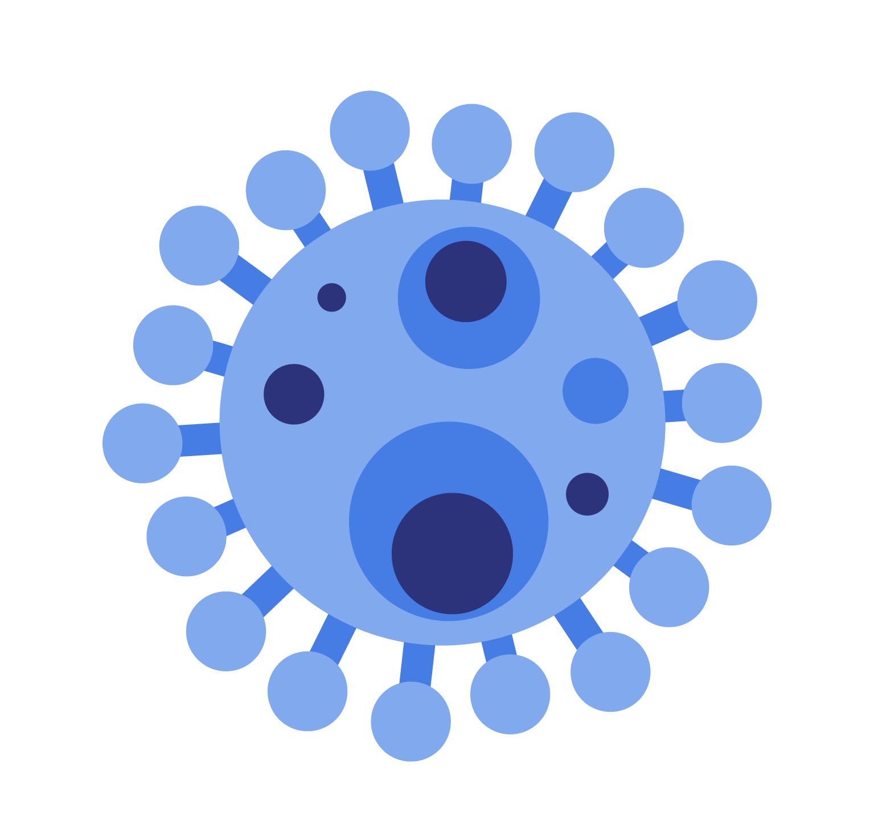

That's the main question that the students participating in one of Science Olympiad™'s event, Microbe Mission, aim to answer. Through teamwork, participation in this event, as well as research, information was obtained of what goes on on molecular level. This website was inspired by this event and its aim is to condence and provide that information to any students and people intrested.

For events with a lab practical portion, each student must bring goggles. Each team may bring one 8.5” X 11” sheet of paper, which may be in a sheet protector sealed by tape or laminated, that may contain information on both sides in any form and from any source without any annotations or labels affixed along with two stand-alone non-programmable, non-graphing calculators (Class II). Any measurements must be made to the precision of the device.
Insoluble compact aggregates (amyloid fibrils) and deposits of these(amyloid plaques) accumulate in the central nervous system, which results in disruption in the central nervous system; both function and structure. This is mainly nervous tissue undergoing vacuolation (nervous system attempt to compartmentalize PrPSc inside vacuoles leading to enlarged vacuoles that appear like hole in tissue analysis)
Prions in humans is a dangerous disease, as it could be dormant for a while, and when symptoms of prion disease show up, it’s already too late. It’s a rapidly progressive disease that could cause things such as neural loss or failure to induce inflammatory response.
Prion disease - transmissible spongiform encephalopathy (TSE). Disease caused include:
Can be acquired(exposure to prions via medical procedure or ingestion of prion-containing material including spontaneous mutation), familial(genetic mutation), sporadic(arising from spontaneous mutation)
PExternal sources of PrPSc:
SARS-CoV-2 virus - Group IV, immediately translated by host due to similarity to mRN, ACE2
HIV-1 - Class VI, destroys CD4 or T-cells, leads to AIDS
Influenza A virus- Class V, genome's segmented, each coded with separate RNA molecule
Hepatitis B virus - Class VII,
T4 phage
Canine
Parvovirus 2
Mimivirus
Poliovirus
Banana bunchy top virus
Class I viruses are double-stranded DNA viruses
Class II viruses are single-stranded DNA viruses
Class III viruses are double-stranded RNA viruses
Class IV viruses are positive-sense single-stranded RNA viruses
Class V viruses are negative-sense single-stranded RNA viruses
Class VI viruses are RNA retroviruses
Class VII viruses are DNA retroviruses
Common microbiological technique used to classify bacteria on the basis of their cell wall structure. The method was developed by the Danish bacteriologist Hans Christian Gram, 1884. Gram-staining yields different results for two different groups: Gram-(+) & Gram-(-). Knowing the Gram stain helps know what antibiotics are most effective.
Archaea and eukaryotes are thought to share a common ancestor because of their many similarities. Phylogenetic analyses suggest that early eukaryotes arose from an ancestor that was a part of a group of archaea called the Asgard archaea, specifically the lineage Heimdallarchaeota. Evidence for the archaeal origin of eukaryotes include the presence of several key proteins involved in eukaryotic processes called eukaryotic signature proteins in the Heimdallarchaeota.
Some of these eukaryotic signature proteins are involved in complex processes such as the cytoskeleton and membrane remodeling. Unlike bacteria, no species of archaea are known to form spores. Many archaea are extremophiles, meaning they live in extreme environments that would pose major challenges for many other organisms (e.g., very hot, cold, acidic, salty, etc.).
The first archaea to be discovered were extremophiles, and because few other organisms are able to withstand the harsh conditions, the relative abundance of these organisms in extreme environments. Archaea are involved in the carbon and nitrogen cycles, assist in digestion, and can be used in sewage treatment. Archaea, especially methanogens like Methanobrevibacter smithii, play important roles in the human gut microbiome. Interestingly, archaea are not known to cause any diseases in humans or in any other organisms. It remains to be discovered if the archaea constitute an entirely non-pathogenic domain of organisms.